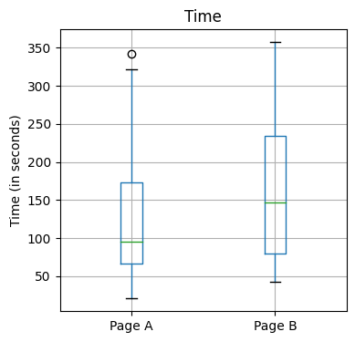
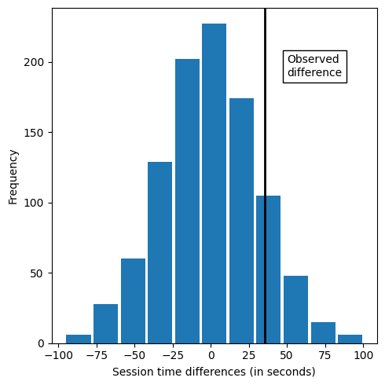
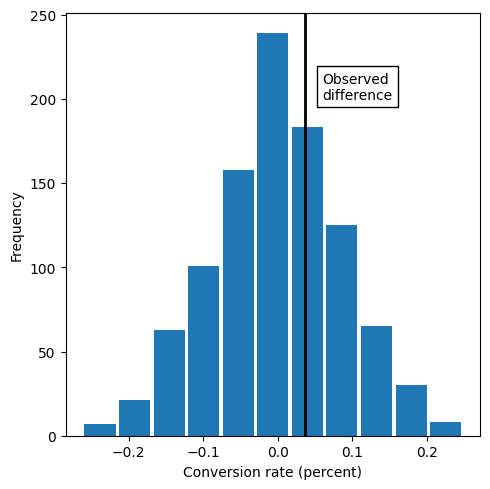
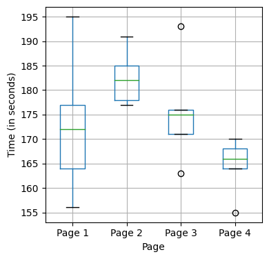
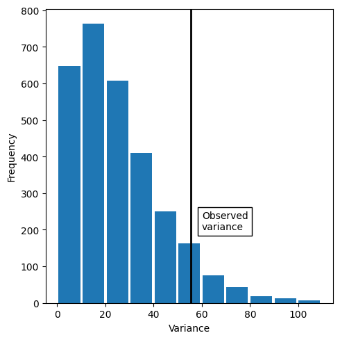
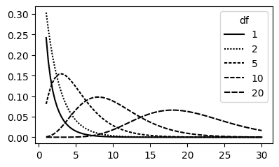
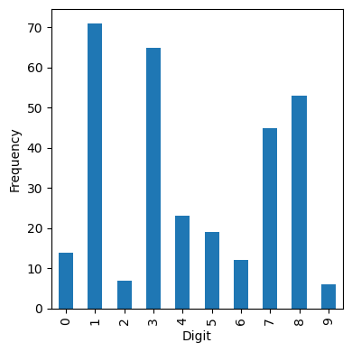

%matplotlib inline
from pathlib import Path
import random
import pandas as pd
import numpy as np
from scipy import stats
import statsmodels.api as sm
import statsmodels.formula.api as smf
from statsmodels.stats import power
import matplotlib.pylab as pltChapter 3 - Statistial Experiments and Significance Testing
Practical Statistics for Data Scientists (Python)
- 2019 Peter C. Bruce, Andrew Bruce, Peter Gedeck
Import required Python packages.
try:
import common
DATA = common.dataDirectory()
except ImportError:
DATA = Path().resolve() / 'data'Define paths to data sets. If you don’t keep your data in the same directory as the code, adapt the path names.
WEB_PAGE_DATA_CSV = DATA / 'web_page_data.csv'
FOUR_SESSIONS_CSV = DATA / 'four_sessions.csv'
CLICK_RATE_CSV = DATA / 'click_rates.csv'
IMANISHI_CSV = DATA / 'imanishi_data.csv'Resampling
session_times = pd.read_csv(WEB_PAGE_DATA_CSV)
session_times.Time = 100 * session_times.Timeax = session_times.boxplot(by='Page', column='Time',
figsize=(4, 4))
ax.set_xlabel('')
ax.set_ylabel('Time (in seconds)')
plt.suptitle('')
plt.tight_layout()
plt.show()
mean_a = session_times[session_times.Page == 'Page A'].Time.mean()
mean_b = session_times[session_times.Page == 'Page B'].Time.mean()
print(mean_b - mean_a)35.66666666666667The following code is different to the R version. idx_A and idx_B are reversed.
# Permutation test example with stickiness
def perm_fun(x, nA, nB):
n = nA + nB
idx_B = set(random.sample(range(n), nB))
idx_A = set(range(n)) - idx_B
return x.loc[list(idx_B)].mean() - x.loc[list(idx_A)].mean()
nA = session_times[session_times.Page == 'Page A'].shape[0]
nB = session_times[session_times.Page == 'Page B'].shape[0]
print(perm_fun(session_times.Time, nA, nB))-34.84761904761906random.seed(1)
perm_diffs = [perm_fun(session_times.Time, nA, nB) for _ in range(1000)]
fig, ax = plt.subplots(figsize=(5, 5))
ax.hist(perm_diffs, bins=11, rwidth=0.9)
ax.axvline(x = mean_b - mean_a, color='black', lw=2)
ax.text(50, 190, 'Observed\ndifference', bbox={'facecolor':'white'})
ax.set_xlabel('Session time differences (in seconds)')
ax.set_ylabel('Frequency')
plt.tight_layout()
plt.show()
# convert perm_diffs to numpy array to avoid problems with some Python installations
perm_diffs = np.array(perm_diffs)
print(np.mean(perm_diffs > mean_b - mean_a))0.121Statistical Significance and P-Values
random.seed(1)
obs_pct_diff = 100 * (200 / 23739 - 182 / 22588)
print(f'Observed difference: {obs_pct_diff:.4f}%')
conversion = [0] * 45945
conversion.extend([1] * 382)
conversion = pd.Series(conversion)
perm_diffs = [100 * perm_fun(conversion, 23739, 22588)
for _ in range(1000)]
fig, ax = plt.subplots(figsize=(5, 5))
ax.hist(perm_diffs, bins=11, rwidth=0.9)
ax.axvline(x=obs_pct_diff, color='black', lw=2)
ax.text(0.06, 200, 'Observed\ndifference', bbox={'facecolor':'white'})
ax.set_xlabel('Conversion rate (percent)')
ax.set_ylabel('Frequency')
plt.tight_layout()
plt.show()Observed difference: 0.0368%
P-Value
If np.mean is applied to a list of booleans, it gives the percentage of how often True was found in the list (#True / #Total).
print(np.mean([diff > obs_pct_diff for diff in perm_diffs]))0.332survivors = np.array([[200, 23739 - 200], [182, 22588 - 182]])
chi2, p_value, df, _ = stats.chi2_contingency(survivors)
print(f'p-value for single sided test: {p_value / 2:.4f}')p-value for single sided test: 0.3498t-Tests
res = stats.ttest_ind(session_times[session_times.Page == 'Page A'].Time,
session_times[session_times.Page == 'Page B'].Time,
equal_var=False)
print(f'p-value for single sided test: {res.pvalue / 2:.4f}')p-value for single sided test: 0.1408tstat, pvalue, df = sm.stats.ttest_ind(
session_times[session_times.Page == 'Page A'].Time,
session_times[session_times.Page == 'Page B'].Time,
usevar='unequal', alternative='smaller')
print(f'p-value: {pvalue:.4f}')p-value: 0.1408ANOVA
four_sessions = pd.read_csv(FOUR_SESSIONS_CSV)
ax = four_sessions.boxplot(by='Page', column='Time',
figsize=(4, 4))
ax.set_xlabel('Page')
ax.set_ylabel('Time (in seconds)')
plt.suptitle('')
plt.title('')
plt.tight_layout()
plt.show()
print(pd.read_csv(FOUR_SESSIONS_CSV).head()) Page Time
0 Page 1 164
1 Page 2 178
2 Page 3 175
3 Page 4 155
4 Page 1 172observed_variance = four_sessions.groupby('Page').mean().var()[0]
print('Observed means:', four_sessions.groupby('Page').mean().values.ravel())
print('Variance:', observed_variance)
# Permutation test example with stickiness
def perm_test(df):
df = df.copy()
df['Time'] = np.random.permutation(df['Time'].values)
return df.groupby('Page').mean().var()[0]
print(perm_test(four_sessions))Observed means: [172.8 182.6 175.6 164.6]
Variance: 55.426666666666655
23.5866666666666random.seed(1)
perm_variance = [perm_test(four_sessions) for _ in range(3000)]
print('Pr(Prob)', np.mean([var > observed_variance for var in perm_variance]))
fig, ax = plt.subplots(figsize=(5, 5))
ax.hist(perm_variance, bins=11, rwidth=0.9)
ax.axvline(x = observed_variance, color='black', lw=2)
ax.text(60, 200, 'Observed\nvariance', bbox={'facecolor':'white'})
ax.set_xlabel('Variance')
ax.set_ylabel('Frequency')
plt.tight_layout()
plt.show()Pr(Prob) 0.074
F-Statistic
We can compute an ANOVA table using statsmodel.
model = smf.ols('Time ~ Page', data=four_sessions).fit()
aov_table = sm.stats.anova_lm(model)
print(aov_table) df sum_sq mean_sq F PR(>F)
Page 3.0 831.4 277.133333 2.739825 0.077586
Residual 16.0 1618.4 101.150000 NaN NaNres = stats.f_oneway(four_sessions[four_sessions.Page == 'Page 1'].Time,
four_sessions[four_sessions.Page == 'Page 2'].Time,
four_sessions[four_sessions.Page == 'Page 3'].Time,
four_sessions[four_sessions.Page == 'Page 4'].Time)
print(f'F-Statistic: {res.statistic / 2:.4f}')
print(f'p-value: {res.pvalue / 2:.4f}')F-Statistic: 1.3699
p-value: 0.0388Two-way anova only available with statsmodels
formula = 'len ~ C(supp) + C(dose) + C(supp):C(dose)'
model = ols(formula, data).fit()
aov_table = anova_lm(model, typ=2)Chi-Square Test
Chi-Square Test: A Resampling Approach
# Table 3-4
click_rate = pd.read_csv(CLICK_RATE_CSV)
clicks = click_rate.pivot(index='Click', columns='Headline', values='Rate')
print(clicks)Headline Headline A Headline B Headline C
Click
Click 14 8 12
No-click 986 992 988# Table 3-5
row_average = clicks.mean(axis=1)
pd.DataFrame({
'Headline A': row_average,
'Headline B': row_average,
'Headline C': row_average,
})| Headline A | Headline B | Headline C | |
|---|---|---|---|
| Click | |||
| Click | 11.333333 | 11.333333 | 11.333333 |
| No-click | 988.666667 | 988.666667 | 988.666667 |
# Resampling approach
box = [1] * 34
box.extend([0] * 2966)
random.shuffle(box)
def chi2(observed, expected):
pearson_residuals = []
for row, expect in zip(observed, expected):
pearson_residuals.append([(observe - expect) ** 2 / expect
for observe in row])
# return sum of squares
return np.sum(pearson_residuals)
expected_clicks = 34 / 3
expected_noclicks = 1000 - expected_clicks
expected = [expected_clicks, expected_noclicks]
chi2observed = chi2(clicks.values, expected)
def perm_fun(box):
random.shuffle(box)
sample_clicks = [sum(box[0:1000]),
sum(box[1000:2000]),
sum(box[2000:3000])]
sample_noclicks = [1000 - n for n in sample_clicks]
return chi2([sample_clicks, sample_noclicks], expected)
perm_chi2 = [perm_fun(box) for _ in range(2000)]
resampled_p_value = sum(perm_chi2 > chi2observed) / len(perm_chi2)
print(f'Observed chi2: {chi2observed:.4f}')
print(f'Resampled p-value: {resampled_p_value:.4f}')Observed chi2: 1.6659
Resampled p-value: 0.4660chisq, pvalue, df, expected = stats.chi2_contingency(clicks)
print(f'Observed chi2: {chisq:.4f}')
print(f'p-value: {pvalue:.4f}')Observed chi2: 1.6659
p-value: 0.4348The above algorithm uses sampling into the three sets without replacement. Alternatively, it is also possible to sample with replacement.
expected = [expected_clicks, expected_noclicks]
def sample_with_replacement(box):
sample_clicks = [sum(random.sample(box, 1000)),
sum(random.sample(box, 1000)),
sum(random.sample(box, 1000))]
sample_noclicks = [1000 - n for n in sample_clicks]
return chi2([sample_clicks, sample_noclicks], expected)
perm_chi2 = [sample_with_replacement(box) for _ in range(2000)]
resampled_p_value = sum(perm_chi2 > chi2observed) / len(perm_chi2)
print(f'Observed chi2: {chi2observed:.4f}')
print(f'Resampled p-value: {resampled_p_value:.4f}')Observed chi2: 1.6659
Resampled p-value: 0.4845Figure chi-sq distribution
x = [1 + i * (30 - 1) / 99 for i in range(100)]
chi = pd.DataFrame({
'x': x,
'chi_1': stats.chi2.pdf(x, df=1),
'chi_2': stats.chi2.pdf(x, df=2),
'chi_5': stats.chi2.pdf(x, df=5),
'chi_10': stats.chi2.pdf(x, df=10),
'chi_20': stats.chi2.pdf(x, df=20),
})
fig, ax = plt.subplots(figsize=(4, 2.5))
ax.plot(chi.x, chi.chi_1, color='black', linestyle='-', label='1')
ax.plot(chi.x, chi.chi_2, color='black', linestyle=(0, (1, 1)), label='2')
ax.plot(chi.x, chi.chi_5, color='black', linestyle=(0, (2, 1)), label='5')
ax.plot(chi.x, chi.chi_10, color='black', linestyle=(0, (3, 1)), label='10')
ax.plot(chi.x, chi.chi_20, color='black', linestyle=(0, (4, 1)), label='20')
ax.legend(title='df')
plt.tight_layout()
plt.show()
Fisher’s Exact Test
Scipy has only an implementation of Fisher’s Exact test for 2x2 matrices. There is a github repository that provides a Python implementation that uses the same code as the R version. Installing this requires a Fortran compiler.
stats.fisher_exact(clicks)# stats.fisher_exact(clicks.values)Scientific Fraud
imanishi = pd.read_csv(IMANISHI_CSV)
imanishi.columns = [c.strip() for c in imanishi.columns]
ax = imanishi.plot.bar(x='Digit', y=['Frequency'], legend=False,
figsize=(4, 4))
ax.set_xlabel('Digit')
ax.set_ylabel('Frequency')
plt.tight_layout()
plt.show()
Power and Sample Size
statsmodels has a number of methods for power calculation
see e.g.: https://machinelearningmastery.com/statistical-power-and-power-analysis-in-python/
effect_size = sm.stats.proportion_effectsize(0.0121, 0.011)
analysis = sm.stats.TTestIndPower()
result = analysis.solve_power(effect_size=effect_size,
alpha=0.05, power=0.8, alternative='larger')
print('Sample Size: %.3f' % result)Sample Size: 116602.391/usr/local/lib/python3.10/site-packages/scipy/stats/_continuous_distns.py:6832: RuntimeWarning: invalid value encountered in _nct_sf
return np.clip(_boost._nct_sf(x, df, nc), 0, 1)effect_size = sm.stats.proportion_effectsize(0.0165, 0.011)
analysis = sm.stats.TTestIndPower()
result = analysis.solve_power(effect_size=effect_size,
alpha=0.05, power=0.8, alternative='larger')
print('Sample Size: %.3f' % result)Sample Size: 5488.408